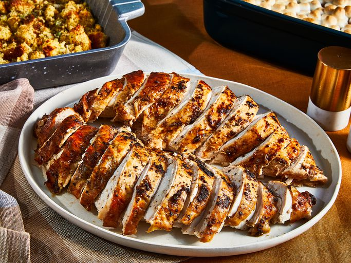

Homepage
Oven Roasted Turkey Breasts

Description
Feeling the pressure to roast a whole bird this Thanksgiving? We're here to tell you that roasting a turkey breast gives you the same great flavor, while saving you money, fridge space, and effort.
A turkey breast is generally sized to feed two to three people with leftovers, so it's the perfect choice for a scaled-down celebration.
This oven-roasted turkey breast is slathered with an herb butter both underneath and on top of the skin, yielding juicy, flavorful meat and a crispy skin. Be sure to save the drippings for the accompanying turkey gravy!
Ingredients
- ¼ cup butter, softened
- 1 clove garlic, minced
- 1 teaspoon paprika
- 1 teaspoon Italian seasoning
- ½ teaspoon salt-free garlic and herb seasoning blend (such as Mrs. Dash)
- salt and black pepper to taste
- 1 (3 pound) turkey breast with skin
- 1 teaspoon minced shallot
- 1 tablespoon butter
- 2 tablespoons dry white wine
- 1 cup chicken stock
- 3 tablespoons all-purpose flour
- 2 tablespoons half-and-half (Optional)
Steps
- Preheat the oven to 350 degrees F (175 degrees C).
- Mix 1/4 cup butter, garlic, paprika, Italian seasoning, herb seasoning, salt, and pepper together in a bowl.
- Place turkey, skin-side up, in a roasting pan. Loosen skin with fingers; spread 1/2 of the butter mixture over turkey and under skin.
Reserve remaining butter mixture. Tent turkey loosely with aluminum foil.
- Bake in the preheated oven for 1 hour. Baste with remaining butter mixture, return to oven and continue to cook until juices run clear and an instant-read thermometer inserted into the thickest part of the breast reads 165 degrees F (74 degrees C), about 30 minutes more. Remove to a cutting board and let rest for 10 to 15 minutes.
- Transfer about 1 tablespoon of pan drippings to a medium skillet. Add shallot and cook on low until translucent, about 5 minutes.
- Add 1 tablespoon butter to the skillet; whisk in wine, scraping up any browned bits from the bottom of the pan.
Whisk in stock and flour until smooth. Bring to a simmer, whisking constantly, until thickened. For a creamier, lighter gravy, whisk in half-and-half.
- Slice turkey and serve with gravy.